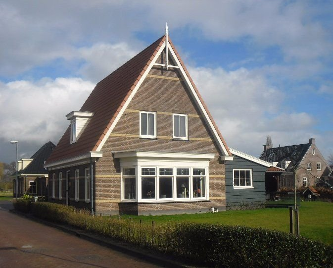
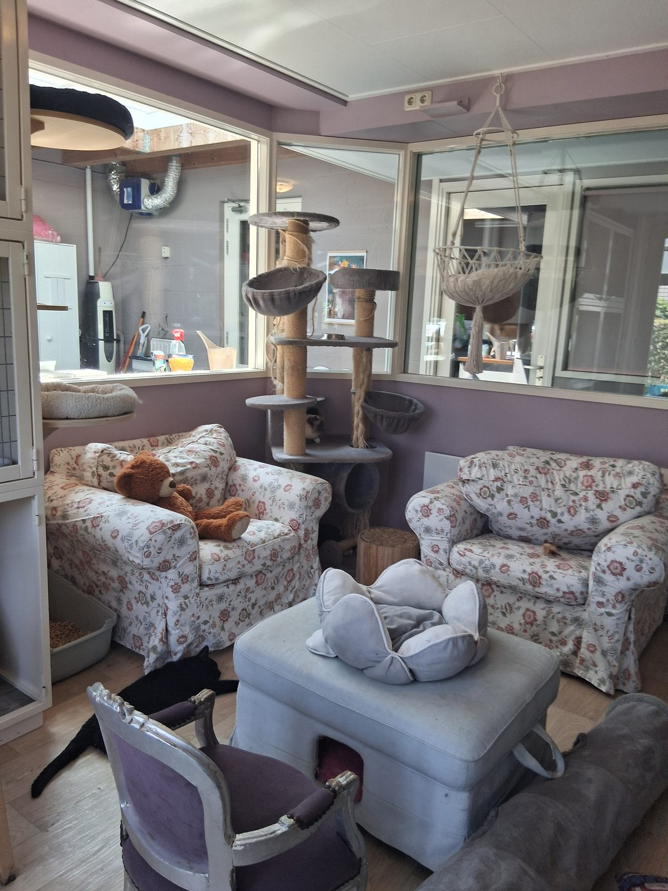
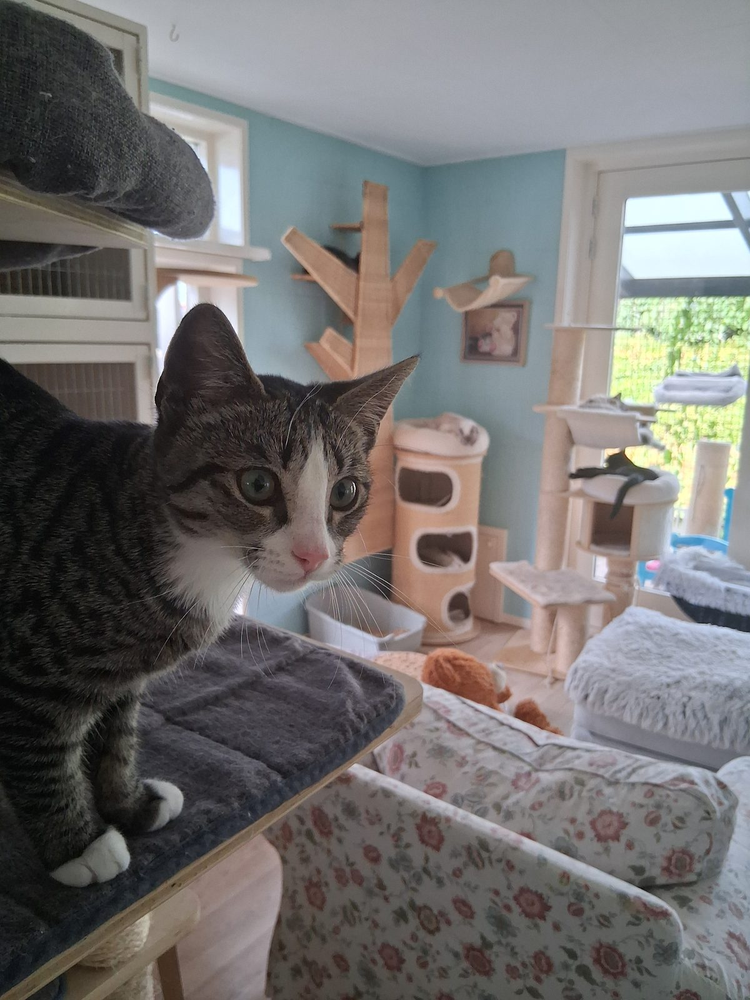
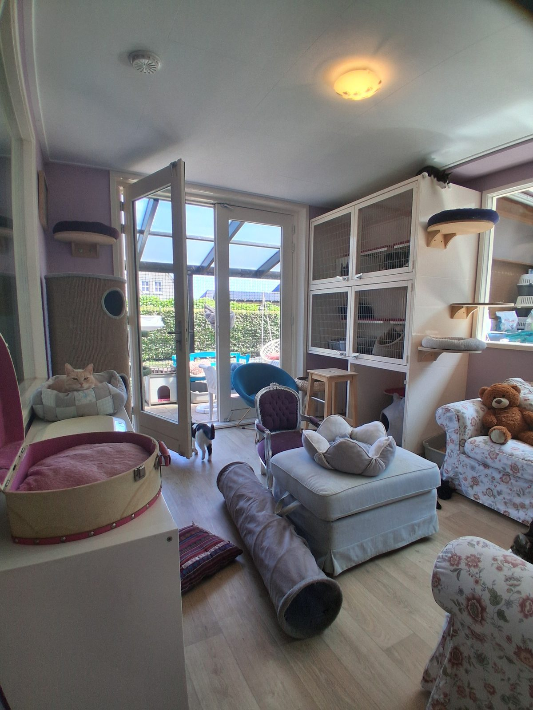
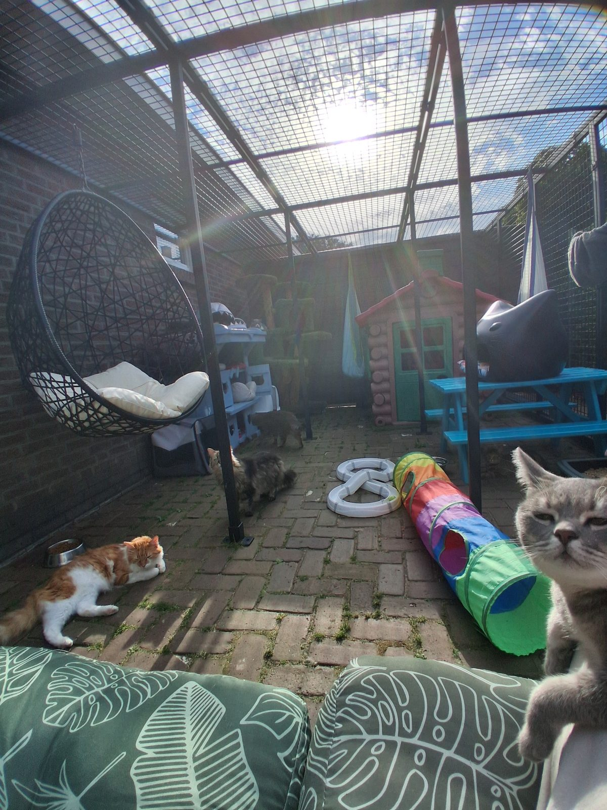
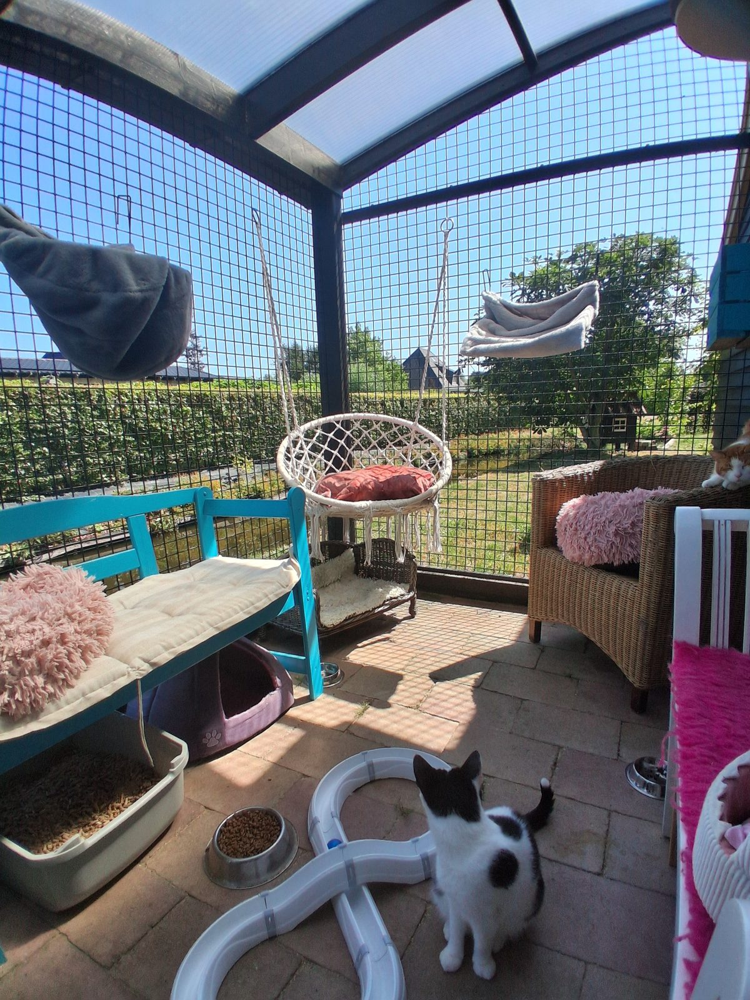

Kleinschalig & persoonlijk
Het pension wordt gerund door Ingrid Niels. Iedere kat wordt gezien, geaaid en gekend — ook de verlegen types.
Bankhangers, tijgers, kittens of oudjes — bij Kattenpension Andijk hebben ze het allemaal naar hun zin. Twee ruime woonkamers met een eigen overdekte buitenren, en de hele dag en nacht lekker loslopen.
Visserspad 4, Andijk
Doordat het pension kleinschalig is opgezet, krijgen alle katten veel aandacht. Geen kooien op een rij, maar echte woonkamers.
Het pension wordt gerund door Ingrid Niels. Iedere kat wordt gezien, geaaid en gekend — ook de verlegen types.
Ingrid is dierenartsassistente en trimster. Het toedienen van medicijnen is geen enkel probleem.
Vanuit de gezamenlijke ruimte vrij in en uit lopen naar buiten. Overdekt, dus ook bij regen gewoon open.
Voeding, verzorging en heel veel knuffels zitten bij de prijs in. Ook dieetvoeding, zonder meerprijs.

Er zijn twee grote pensionkamers, elk met een eigen buitenren. Deze groepsruimtes zijn ingericht als echte woonkamers voor de katten. Verder is er nog een kleinere ruimte voor katten die niet samen kunnen met andere katten of speciale verzorging nodig hebben.

Het pension is geschikt voor alle soorten katten: bankhangers, tijgers, kittens of oude van dagen. Ook katten met speciale zorg zijn bij ons in goede handen.
Ingrid is dierenartsassistente en trimster, dus u kunt er gerust op zijn dat uw kat in goede handen is. Mochten er onverhoopt gezondheidsproblemen ontstaan, dan nemen we altijd eerst contact met u op.
Lees de voorwaardenAlles wat u vooraf wilt weten, kort op een rij.
Laagseizoen € 16,- per dag
Hoogseizoen € 18,- per dag
All-inclusive: voeding, verzorging en heel veel knuffels. Incl. 21% BTW.
Katten kunnen de hele dag gehaald en gebracht worden — maakt u wel eerst even een afspraak.
Visserspad 4
1619 GB Andijk
(gemeente Medemblik)
Zo ziet een vakantie bij ons eruit.



U bent van harte welkom om het pension te bezichtigen. Belt u even van tevoren, dan nemen we alle tijd voor u en uw vragen.